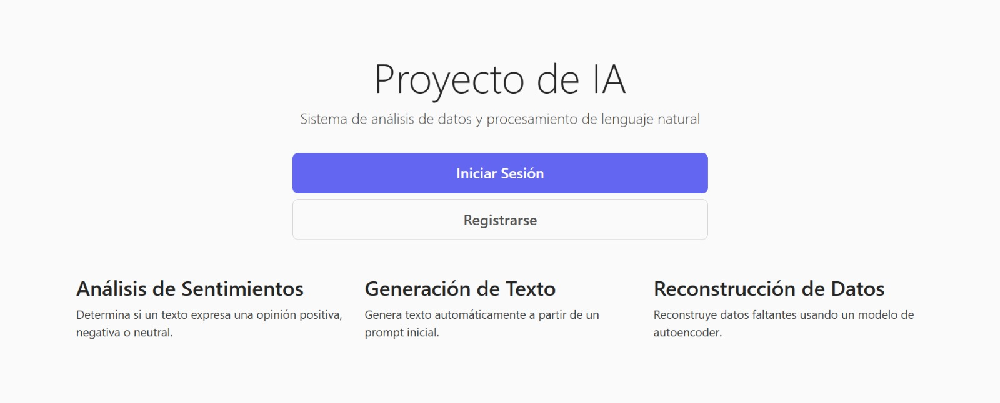
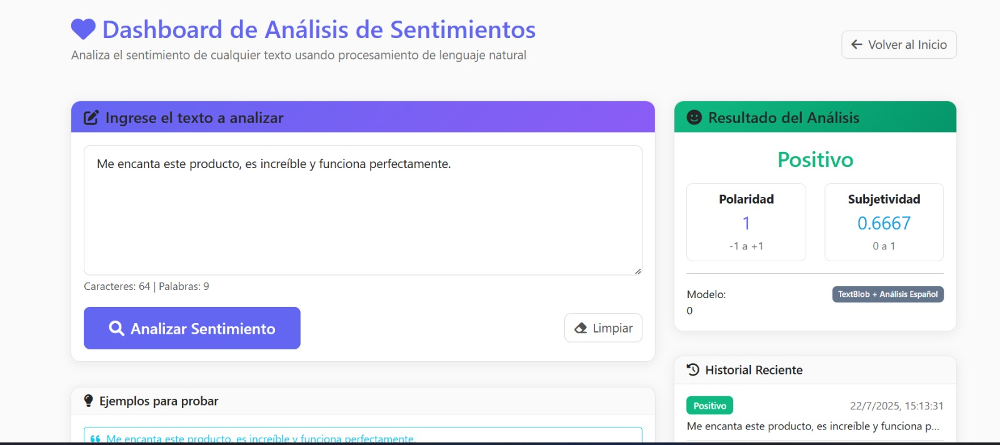
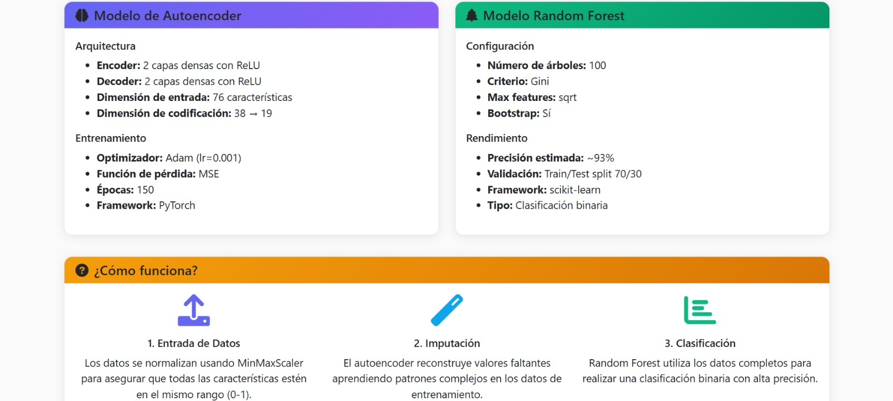
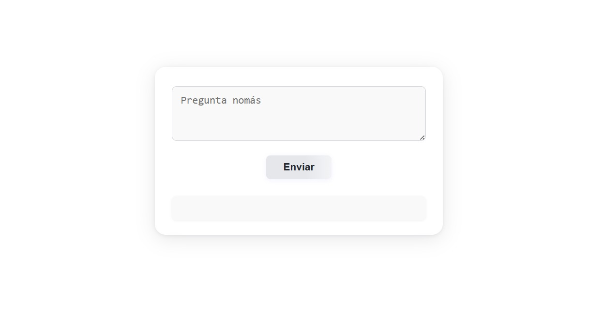

Sistemas Inteligentes con Python - Flask / Django

Definición y Conceptos Clave
Este documento abarca los conceptos fundamentales, la arquitectura y las tecnologías clave en el campo de los Sistemas Inteligentes, con un enfoque práctico en el desarrollo web backend utilizando Python, Flask y Django.
Sistemas Inteligentes:
Son entidades computacionales capaces de percibir su entorno, procesar información, razonar y ejecutar acciones de forma autónoma para alcanzar metas definidas.
Alcances funcionales:
- Percepción sensorial: Captura de datos de sensores o fuentes digitales
- Razonamiento simbólico: Inferencia basada en reglas lógicas y conocimiento previo
- Aprendizaje adaptativo: Capacidad de mejorar el desempeño con la experiencia
Ámbitos de aplicación:
🏭 Automatización industrial
Robótica autónoma
🏥 Diagnóstico médico
Asistido por IA
🚗 Vehículos inteligentes
Conducción autónoma
💰 Finanzas
Mercados predictivos
🎓 Educación
Personalizada
🤖 Sistemas expertos
Atención al cliente
Ejemplos de Sistemas Inteligentes
🏥 Salud:
- Watson Health de IBM: Análisis de datos médicos
- Sistemas de diagnóstico por imagen: Detección de patologías
🚗 Automoción:
- Vehículos autónomos: Tesla, Waymo
- Sistemas ADAS: Asistencia avanzada al conductor
🏭 Industria 4.0:
- Robots colaborativos (cobots): Trabajo conjunto humano-robot
- Sistemas predictivos de mantenimiento: Prevención de fallos
🛒 Retail y logística:
- Centros logísticos de Amazon: Automatización completa
- Sistemas de recomendación: Netflix, Spotify, Yachay
🏠 Hogar inteligente:
- Asistentes virtuales: Alexa, Google Assistant
- Termostatos inteligentes: Nest
🏙️ Ciudades inteligentes:
- Semáforos adaptativos: Optimización de tráfico
- Sistemas de videovigilancia: Reconocimiento facial
Arquitectura de los Sistemas Inteligentes
La arquitectura define la estructura e interacción de los componentes. Los componentes principales incluyen:
🔍 Módulo de percepción:
Interfaces con sensores y fuentes de datos
🧠 Módulo de conocimiento:
Base de datos estructurada, ontologías, redes semánticas
⚡ Módulo de razonamiento:
Algoritmos de inferencia lógica, toma de decisiones, planificación
📚 Módulo de aprendizaje:
Técnicas de machine learning y adaptación al entorno
🎯 Módulo de acción:
Control de actuadores físicos o ejecución de comandos virtuales
👤 Interfaz hombre-máquina:
Canales de interacción con usuarios
Redes Neuronales Artificiales (RNA)
Son modelos computacionales inspirados en el cerebro humano para el procesamiento paralelo y adaptativo de información.
Características clave:
Compuestas por nodos (neuronas) y conexiones (sinapsis) en capas (entrada, ocultas, salida). Aprenden ajustando pesos sinápticos mediante algoritmos como retropropagación.
Tipos comunes:
- Perceptrón multicapa (MLP)
- Redes de Kohonen
- Redes de Hopfield
- Redes convolucionales (CNNs)
- Redes recurrentes (RNNs y LSTMs)
Aprendizaje Profundo (Deep Learning)
Subdisciplina del aprendizaje automático que emplea arquitecturas de redes neuronales profundas con múltiples capas ocultas.
Aspectos fundamentales:
- Extracción automática de características
- Escalabilidad para grandes volúmenes de datos
- Uso de backpropagation y optimización (Adam, RMSprop, SGD)
Arquitecturas principales:
- CNNs: Para visión artificial
- RNNs y LSTMs: Para secuencias y procesamiento de lenguaje
- Transformers: Para modelos generativos y entendimiento semántico (GPT, BERT)
Algoritmos de Toma de Decisiones
Permiten a los sistemas inteligentes seleccionar acciones óptimas según objetivos y restricciones.
🔧 Sistemas basados en reglas:
IF-THEN
📊 Redes Bayesianas:
Probabilidad condicional
🌫️ Lógica difusa:
Razonamiento aproximado
🌳 Árboles de decisión:
Clasificación jerárquica
🎯 Algoritmos heurísticos:
Búsqueda optimizada
🗺️ Algoritmos de planificación:
STRIPS, A*
Clasificación de Modelos en Deep Learning
🎯 Modelos Discriminativos:
Clasifican datos de entrada en categorías, modelando la probabilidad condicional P(y|x). No generan datos nuevos, se centran en la separación de clases.
Ejemplos:
- Regresión logística
- SVM
- Árboles de decisión
- Redes neuronales clásicas (MLP)
- Modelos BERT
🎨 Modelos Generativos:
Aprenden la distribución conjunta P(x,y) o P(x) para generar nuevas muestras de datos. Pueden reconstruir o simular datos similares a los reales.
Ejemplos:
- Naive Bayes
- Hidden Markov Models
- GANs
- Autoencoders
- VAEs
Large Language Models (LLM)
Modelos generativos avanzados especializados en lenguaje natural, entrenados con arquitecturas Transformer sobre grandes volúmenes de texto. Pueden generar texto coherente, traducir, responder preguntas y redactar código.
🤖 GPT (OpenAI):
Generación de texto y código
💎 Gemini (Google):
Multimodal AI
🎭 Claude (Anthropic):
Asistente conversacional
🦙 LLAMA (Meta):
Modelo de código abierto
🌟 Mistral:
Modelo europeo eficiente
Implementación Práctica con Python
Ejemplo de aplicación Flask con integración de IA:
# app.py - Sistema Inteligente con Flask
from flask import Flask, render_template, request, jsonify
import numpy as np
from transformers import pipeline
import skfuzzy as fuzz
from skfuzzy import control as ctrl
import torch
app = Flask(__name__)
# Inicializar modelos de IA
sentiment_analyzer = pipeline("sentiment-analysis")
text_generator = pipeline("text-generation", model="gpt2")
# Sistema de lógica difusa para recomendaciones
def create_fuzzy_system():
# Variables de entrada
quality = ctrl.Antecedent(np.arange(0, 11, 1), 'quality')
service = ctrl.Antecedent(np.arange(0, 11, 1), 'service')
# Variable de salida
tip = ctrl.Consequent(np.arange(0, 26, 1), 'tip')
# Funciones de membresía
quality.automf(3)
service.automf(3)
tip['low'] = fuzz.trimf(tip.universe, [0, 0, 13])
tip['medium'] = fuzz.trimf(tip.universe, [0, 13, 25])
tip['high'] = fuzz.trimf(tip.universe, [13, 25, 25])
# Reglas difusas
rule1 = ctrl.Rule(quality['poor'] | service['poor'], tip['low'])
rule2 = ctrl.Rule(service['average'], tip['medium'])
rule3 = ctrl.Rule(service['good'] | quality['good'], tip['high'])
return ctrl.ControlSystem([rule1, rule2, rule3])
fuzzy_system = create_fuzzy_system()
tip_calculator = ctrl.ControlSystemSimulation(fuzzy_system)
@app.route('/')
def index():
return render_template('ai_dashboard.html')
@app.route('/analyze_sentiment', methods=['POST'])
def analyze_sentiment():
text = request.json.get('text', '')
if not text:
return jsonify({'error': 'No text provided'}), 400
try:
result = sentiment_analyzer(text)
return jsonify({
'text': text,
'sentiment': result[0]['label'],
'confidence': result[0]['score']
})
except Exception as e:
return jsonify({'error': str(e)}), 500
@app.route('/generate_text', methods=['POST'])
def generate_text():
prompt = request.json.get('prompt', '')
max_length = request.json.get('max_length', 50)
if not prompt:
return jsonify({'error': 'No prompt provided'}), 400
try:
result = text_generator(
prompt,
max_length=max_length,
num_return_sequences=1,
temperature=0.7
)
return jsonify({
'prompt': prompt,
'generated_text': result[0]['generated_text']
})
except Exception as e:
return jsonify({'error': str(e)}), 500
@app.route('/fuzzy_recommendation', methods=['POST'])
def fuzzy_recommendation():
quality_score = request.json.get('quality', 5)
service_score = request.json.get('service', 5)
try:
# Aplicar lógica difusa
tip_calculator.input['quality'] = quality_score
tip_calculator.input['service'] = service_score
tip_calculator.compute()
recommendation = tip_calculator.output['tip']
return jsonify({
'quality_input': quality_score,
'service_input': service_score,
'tip_recommendation': round(recommendation, 2),
'explanation': f'Basado en calidad ({quality_score}/10) y servicio ({service_score}/10)'
})
except Exception as e:
return jsonify({'error': str(e)}), 500
@app.route('/neural_prediction', methods=['POST'])
def neural_prediction():
# Simulación de red neuronal simple
data = request.json.get('data', [])
if not data:
return jsonify({'error': 'No data provided'}), 400
try:
# Convertir a tensor
input_tensor = torch.tensor(data, dtype=torch.float32)
# Red neuronal simple (simulada)
weights = torch.randn(len(data), 1)
bias = torch.randn(1)
# Predicción lineal simple
prediction = torch.matmul(input_tensor, weights) + bias
return jsonify({
'input_data': data,
'prediction': prediction.item(),
'model_type': 'Simple Neural Network'
})
except Exception as e:
return jsonify({'error': str(e)}), 500
@app.route('/ai_dashboard')
def ai_dashboard():
return render_template('ai_dashboard.html')
if __name__ == '__main__':
app.run(debug=True)Ejemplos Prácticos y Capturas
A continuación se muestran ejemplos prácticos de las tecnologías y conceptos aprendidos:
📸 Captura 1: Dashboard de Sistema Inteligente
📸 Captura 2: Análisis de sentimientos en tiempo real
📸 Captura 3: Sistema de lógica difusa
📸 Captura 4: Integración con modelos LLM
Tecnologías Aprendidas
Lenguajes/Frameworks:
- Python
- Flask
- Django
Servidores Web/Módulos:
- Apache HTTP Server
Gestores de Paquetes:
- PIP
pip install scikit-fuzzypip install torch transformers flask python-dotenv
Librerías/Herramientas de IA/ML:
- Hugging Face Transformers
- scikit-fuzzy (skfuzzy)
- numpy
Modelos de Lenguaje:
- Llama 3 (Meta)
Tecnologías Frontend:
- HTML
- CSS
- JavaScript
Conceptos de Programación Python:
- Clases
- Herencia
- Lógica condicional
Código Fuente y Recursos
Ver Código Fuente Completo
Accede al repositorio completo con los sistemas inteligentes y aplicaciones de IA desarrollados en la Semana 15.
📁 Contenido del Repositorio
-
Sistemas de IA
Implementaciones de algoritmos de inteligencia artificial
-
Modelos de Lenguaje
Integración y uso de Large Language Models (LLM)
-
Análisis de Datos
Scripts de procesamiento y análisis de datos con Python
-
Aplicaciones Web IA
Interfaces web para interactuar con sistemas inteligentes
-
Documentación Técnica
Guías de implementación y casos de uso de IA
Reflexión Personal
Esta semana final representó la culminación de mi viaje de aprendizaje, integrando todo el conocimiento adquirido en desarrollo web con el fascinante mundo de los sistemas inteligentes. La combinación de Python, Flask y tecnologías de IA me abrió un horizonte completamente nuevo de posibilidades.
El estudio de los sistemas inteligentes me hizo comprender la complejidad y elegancia de crear entidades computacionales que pueden percibir, razonar y actuar de forma autónoma. La arquitectura modular de estos sistemas, con sus componentes de percepción, conocimiento, razonamiento, aprendizaje y acción, me proporcionó un marco conceptual sólido para diseñar soluciones inteligentes.
Las redes neuronales artificiales y el aprendizaje profundo me fascinaron por su capacidad de modelar patrones complejos y aprender de los datos. La implementación práctica con bibliotecas como Transformers de Hugging Face me permitió experimentar con modelos de lenguaje avanzados y comprender su potencial transformador.
La lógica difusa me enseñó una forma diferente de abordar la incertidumbre y el razonamiento aproximado, especialmente útil en sistemas donde las decisiones no son binarias. Su implementación con scikit-fuzzy me mostró cómo traducir el conocimiento humano en reglas computacionales.
Los Large Language Models como GPT, Gemini y LLAMA me impresionaron por su capacidad de generar texto coherente y realizar tareas complejas de procesamiento de lenguaje natural. Integrar estos modelos en aplicaciones Flask me demostró el poder de combinar desarrollo web tradicional con inteligencia artificial.
La distinción entre modelos discriminativos y generativos me ayudó a entender mejor cuándo usar cada tipo de modelo según el problema a resolver. Esta comprensión teórica, combinada con la implementación práctica, me preparó para abordar proyectos de IA más complejos.
Esta semana no solo completó mi formación técnica, sino que me inspiró a seguir explorando las infinitas posibilidades que surgen de la intersección entre el desarrollo web y la inteligencia artificial. El futuro de la tecnología está en esta convergencia, y me siento preparado para ser parte de esa revolución.